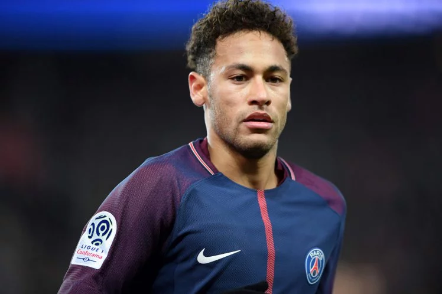
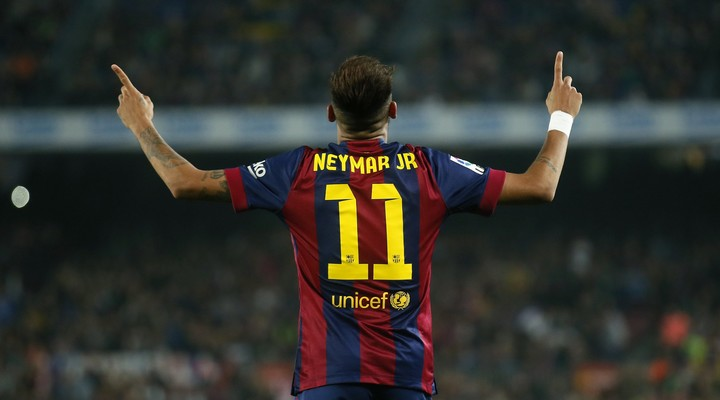

👑 Neymar da Silva Santos Júnior: The Prince Who Never Became King

Neymar: A footballing prodigy
Neymar’s story is one of brilliance, heartbreak, and unfulfilled prophecy. Born in Mogi das Cruzes, Brazil, in 1992, he was hailed as the heir to Pelé’s throne—a dazzling prodigy with samba in his feet and stardust in his stride.
🌟 The Rise: From Santos to Stardom

Young Neymar at Santos FC, where the legend began
- At Santos FC, Neymar became a national icon by age 19, leading the club to its first Copa Libertadores title since Pelé’s era.
- His flair, creativity, and marketability made him a global sensation, drawing comparisons to Brazilian legends like Ronaldinho and Ronaldo.
🔥 Barcelona: A Glimpse of Royalty

Neymar shining in Barcelona’s iconic colors
- In 2013, Neymar joined Barcelona, forming the legendary MSN trio with Messi and Suárez.
- He won the Champions League in 2015, scoring in the final and helping secure a historic treble.
- Yet, despite his brilliance, he remained in Messi’s shadow, never the undisputed leader.
💸 PSG: The Bid for the Crown

Neymar at PSG, chasing greatness in Paris
- In 2017, Neymar made a record-breaking €222 million move to Paris Saint-Germain, seeking to become the centerpiece of a new dynasty.
- He won multiple Ligue 1 titles, dazzled with moments of genius, and carried PSG to a Champions League final in 2020.
- But injuries, media scrutiny, and missed Ballon d'Ors kept him from ascending to football’s throne.
💔 The Weight of Expectation
- Neymar bore the hopes of a nation, especially during World Cup campaigns. But heartbreaks—like Brazil’s 2014 collapse and his injury in 2018—defined his international legacy.
- Critics questioned his discipline, while fans mourned the missed potential. Yet through it all, Neymar never stopped dancing.
🕊️ Legacy: More Than a Crown
“He was never the king. Not because he lacked greatness—but because the crown was never fair.”
Neymar may not have claimed football’s throne, but he became something more elusive: a symbol of joy, artistry, and the last echo of joga bonito.
He’s the prince who reminded us that football is not just about trophies—but about magic. And in the hearts of millions, Neymar reigns eternal.